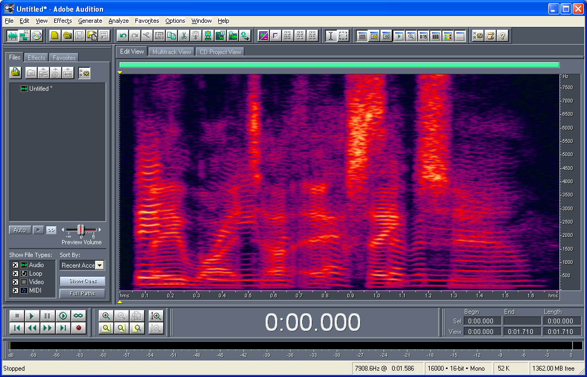

Project SpaceEye
SpaceEye was a project to build a cloud removal system for satellite images using synthetic aperture radar to "see through clouds". The system is available as an API through FarmVibes. The idea was to use neural attention to interpolate cloud-free patches to replace cloudy optical patches. This closely resembles approaches that have used temporal interpolation to fill in missing data, but here we use radar data to guide the interpolation. The system was trained on Sentinel-1 and Sentinel-2 data from the European Space Agency (via Microsoft Planetary Computer). The project was based on the summer internsip work of Mingmin Zhao. The published paper is available here: Seeing through clouds in satellite images.
Here are some example applications of SpaceEye:


A video demonstration of the system can be found here. In an earlier research project at IBM we implemented a sophisticated nuclearn norm based interpolation version for cloud removal in daily MODIS images. That system has the potential to be as accurate, but is slower and the implementation used a very poor quality cloud detector. The following video shows a year worth of MODIS images for the entire contiguous United States (the black region is not covered by TERRA MODIS).
Location Aware Super Resolution
Using satellite images for precision farming is hampered by two issues.
- The presence of clouds and other atmospheric noise sources.
- The low spatial resolution of freely available satellite images.
Learning to see more: Super-resolution for precision farming.
Unfortunately, even the best super-resolution methods cannot increase the resolution reliably beyond a factor of 10. For those precision farming applications that require sub-meter resolution we therefore need a new approach. Such an approach could be the traditional one of flying drones over the fields, but that is expensive and not scalable. In this project we considered firstly, the possibilty of extendinging the spectral resolution of the drone images by fusing them with freely available multispectral satellite images. Secondly, we considered temporal and spatial extension of the drone images by use of traditional super-resolution methods.
Simulating cameras and satellite sensors
In order to train these systems we need high resolution images, but satellite sensors are sophisticated, expensive and existing datasets are at a low-resolution. To get around this problem we simulate the sensors by using high resolution drone images and the published spectral response functions of the satellite sensors. A farmer will be unable to afford a hyperspectral camera, but once spectral extension models are built he won't need one. We used hyperspectral images collected by USDA-ARS.
Image Registration
To fuse the drone and satellite images we need to take into account that Sentinel-2 images are at a 10m resolution and drone images are at a 2-15cm resolution. This means that a single Sentinel-2 Pixel corresponds to 80x80 drone pixels for a 12.5cm drone resolution. To register the images we took a two-stage approach consisting of using the geospatial projection information to get close and then using regression to get the final alignment.
Example Results
For spatial extension we target 1m resolution, and the resulting reconstructions are not perfect, however, with spectral extension that has access to a high resolution drone images as side information the results are even good enough to use as ground truth for training spatial-extension super-resolution models.


Single Microphone Speech Separation
This project was done at IBM research with Steven Rennie, John Hershey and Trausti Kristjanson in the era before neural networks ruled speech recognition. At the core the idea was to simply use a standard speech recognition system (HMM/GMM) to search through the cartesian product of each persons word-lattice. For best performance we used acoustic models specific to each speaker when feasible and a fast approximate search through the product graph. For two speakers we used the Gharamani/Jordan factorial HMM algorithm and for more than two speakers loopy belief propagation. The first example is from the ICSLP 2006 Speech Separation Challenge that used speech from a small grammar artificially mixed together.

Recognition + reconstruction for female speaker:

Recognition + reconstruction for male speaker:
In the second example we attempted a full-fledged recognition of a real recording from the 2008 primary presidential debate between then Senator Hillary Clinton and then Senator Barak Obama. This audio is full of noise (reverb, word-restarts, third speakers, etc/) and consists of natural speech. It's therefore much harder and the reconstruction quality is not as good.
With the more constrained grammar we could even handle four speakers: